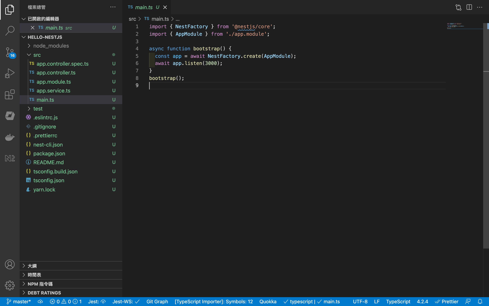

一步一步將 Nestjs 部署到 Heroku
一步一步將 Nestjs 部署到 Heroku
Nestjs 是一個我很喜歡用的 Nodejs 框架，和 Expressjs 比起來，Nestjs有更多工程化、模組化、抽象化的設計，讓整體架構可以更清晰，同時也更好維護與修改。最大的好處是，其語法基本上和 Angular 幾乎一模一樣，只要熟悉Angular，基本上可以無縫接軌迅速上手。
另外，官網的文件也寫得很詳細，詳細解釋要如何使用。但就是沒有解釋說編譯完成後，要如何部署上去，部署上去後要如何執行。官方文件似乎缺少這一塊，或許是這一塊可能是 Nodejs 的基本常識，是我缺乏而已，總而言之，現在就來一步一步說明如何將 Nestjs部署到 Heroku 上面
- 確定有安裝 Nodejs 和 Nestjs CLI
npm i -g @nestjs/cli- 建立 Nestjs 專案
nest new hello-nestjs打開之後，可以看到一個全新的 Nestjs 空專案

打開 main.ts ，將預設的port修改成吃運行設定，如果沒有的話才吃3000
async function bootstrap() {
const app = await NestFactory.create(AppModule);
const port = process.env.PORT || 3000;
await app.listen(port);
}在 package.json 有一個指令start:prod，代表正式版本運行的指令
"start:prod": "node dist/main",新增 Procfile檔案，注意沒有任何副檔名，這是 Heroku 的設定檔案，告訴 Heroku 啟動的時候要執行什麼指令
web: npm run start:prod建立 Heroku 專案

取一個自己喜歡的名字，點 Create app 就建立完成了

接著這邊可以選擇部屬方式，你可以選擇使用 Heroku 內建的 Git 或者是連接 Github
在這裡我選擇連接我比較熟悉的 Github，點選之後，會要求你授權，給予授權之後，就可以尋找自己的專案，並且連接

連接完成之後，可以點選自動部屬或手動部屬，在這裡選擇手動部屬 master

按下去之後，就會開始安裝相依套件

稍等一下之後，就會看到部屬成功的訊息

點選 View的按鈕，就可以打開部屬的網址，看到結果

Heroku 是一個很方便部屬實驗性的API的地方，唯一的缺點就是，如果有一陣子沒人用他的話，機器就會自動關係，下次呼叫的時候，就會特別久，等待機器再啟動。